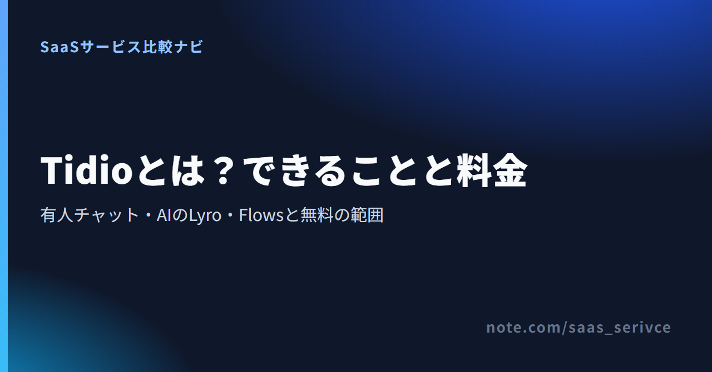
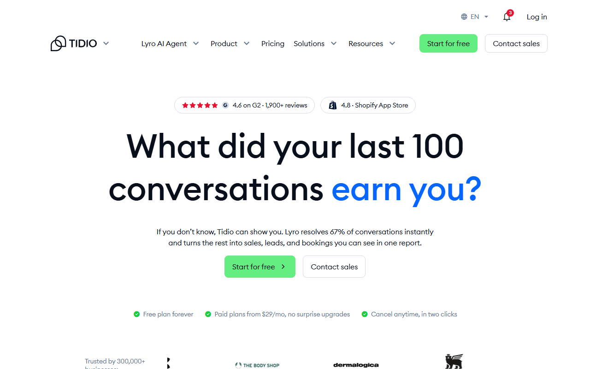
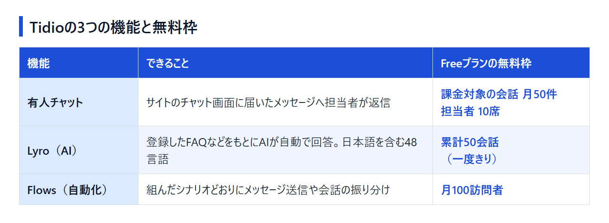

ShopifyのアプリやWordPressのプラグインを探していて、Tidio（ティディオ）という名前を見かけた人は多いはずです。AIがどこまで答えるのか、無料でどこまで使えるのか、日本のサイトに入れて困らないのかは、アプリ一覧の説明だけでは分かりません。編集部はTidioを契約していないため、公式の料金ページとヘルプ、公開レビューをもとに整理しました。読み終えるころには、無料プランで自社サイトに入れてみるか、別のチャットツールにするかを決められます。
Tidioは、サイトに置くチャット画面で、担当者による有人チャット、AIエージェントLyroの自動応答、Flowsによる自動化をまとめて使えるツールです。Freeプランと、カード登録なしの7日間トライアルがあり、契約前に自社サイトで試せます。管理画面とサポートは英語です。

公式サイトは tidio.com で、日本語版の公式サイトはありません。「tidios」と綴られることもありますが、指しているのは同じサービスです。
向いているのは、次のような人です。
反対に、次に当てはまるなら、日本語で使えるツールも並べて比べたほうが確実です。
こうした場合の候補は、後半の「日本語で運用したいならTidio以外も候補になる」で紹介します。
公式サイトは英語です。ShopifyならApp Storeのアプリ、WordPressなら公式プラグインからも入れられます。
Tidioの機能は、担当者が返信する有人チャット、AIが答えるLyro、決めたシナリオで動くFlowsの3つに分かれ、無料枠もそれぞれ別に数えます。「Tidioのチャットボット」と呼ばれるのは、このうちLyroとFlowsの2つです。

サイトのチャット画面（ウィジェット）に届いたメッセージへ、担当者が管理画面から返信する機能です。Freeプランでも担当者は10席まで登録できます。ただし、無料で受けられる課金対象の会話は月50件までに限られます。
LyroはTidioのAIエージェントで、読み込ませた自社のFAQなどをもとに、訪問者の質問へ自動で答えます。日本語を含む48言語に対応し、顧客が書いた言語に合わせて返答します。
無料で使えるのは累計50会話までで、月ごとには戻らない一度きりの枠です。
Flowsは、運営側があらかじめ組んだシナリオどおりにメッセージを送ったり、会話を振り分けたりする自動化の機能です。AIが答えを考えるLyroと違い、設定した手順から外れた動きはしません。Freeプランで使えるのは月100訪問者までです。
ShopifyとWordPressには専用のアプリとプラグインがあり、Wixにはコードを貼って設置します。SNSのメッセージもTidioにまとめられます。
Freeプランは$0で、有料はStarter・Growth・Plus・Premiumの4つです。Lyroの有料枠は、本体プランとは別の料金になります。料金は「課金対象の会話数」「Lyroの会話数」「Flowsの訪問者数」の3つで決まるので、自社の使い方ではどれが先に上限に届くかを見てプランを選びます。
年払いにしたときの月額表示に、1ドル=157円換算（執筆時点の目安。為替で変動）の金額を添えると次のとおりです。
Freeプランには期限がありません。有人チャット・Lyro・Flowsの無料枠の範囲に収まっていれば、ずっと$0のまま使えます。
7日間のトライアルでは、カード登録なしでCustomer Service・Lyro・Flowsの全機能を動かせます。終了後は自動でFreeプランに戻るので、試しただけで課金が始まることはありません。
割引コードやクーポンを探すより先に、年払いか月払いかを決めておきましょう。ここで挙げた金額は年払いにしたときの月額表示で、月払いを選ぶと表示される金額が変わります。
Tidioの費用が増えるのは、主に次の3つの場面です。
見落としがちなのは2つ目です。Lyroの無料枠はFree・Starter・Growth共通で、本体を上げても増えません。AIの自動応答を柱にするなら、本体プランとLyroの有料枠を合わせた額で予算を組みます。たとえば本体をStarterにしてLyroの有料枠を足すと、年払い表示で合わせて月$56.67から（約8,897円から）です。
料金ページでは、年払いと月払いを切り替えて金額を見比べられます。まずFreeで会話数の推移を1か月ほど見てから、どのプランに上げるかを決めても遅くありません。
管理画面は日本語を選べませんが、チャット画面は文言を手動で日本語に書き換えられ、Lyroは日本語で返答します。支払いはUSDのカード自動課金で、解約すると次回請求日まで使ったあとFreeへ移ります。
領域ごとの対応は次のとおりです。
チャット画面の翻訳設定は、会話の中身までは自動で翻訳しません。
有料プランにアップグレードするときにクレジットカード情報を入力し、以後は月次または年次でUSD建ての自動課金になります。Plus・Premiumでは銀行振込も選べます。Shopifyのアプリから入れた場合、支払いはShopify経由になります。対応しているカードブランドや、JCB・PayPalを使えるかどうかは、公式に記載がありません。
請求書は Settings → Project → Billing の「Billing details」タブからPDFでダウンロードでき、請求先情報や送付先メールもここで設定します。日本のインボイス制度の登録番号が載るかどうかは、公式に案内がありません。海外SaaSの利用料は消費税の扱いが国内サービスと異なる場合があるため、経費処理の方法は税理士に確認してください。
有料プランはいつでも解約でき、次回請求日まで使ったあとFreeプランへ移ります。残りの請求期間の分は返金されません。
解約してもアカウントはFreeで残るので、繁忙期だけ有料プランに上げる使い方もできます。短い期間なら月払いを選ぶことになるため、予算は月払いの金額で見ておきます。
公式の問い合わせ手段は次の4つで、どれも英語です。
無料で入れられる手軽さと、Lyroが多言語で答えられる点が評価される一方、課金の数え方が3つあって費用を見積もりにくいことと、管理画面・サポートが英語であることが注意点です。
国内の紹介記事では、次の点が強みとして挙がっています。
仕様の面でも、トライアルはカード不要です。Lyroは48言語で返答するので、海外からの問い合わせにもAIで一次対応できます。Freeプランでも担当者を10席まで登録できますが、無料で受けられる課金対象の会話は月50件なので、席数に見合う量をFreeでさばけるわけではありません。
国内の紹介記事にも、AIを本格的に運用すると費用が膨らむという指摘があります。海外の掲示板では、ほかのAIチャットツールと並べて比べる話題も見られます。
Tidioの公式サイトでアカウントを作り、ShopifyならApp Store、WordPressならプラグインから入れます。スマホ向けの公式アプリもあります。
アプリを追加しただけでは、ストアにチャットは表示されません。テーマを変えたときは、新しいテーマで「Tidio Chat Widget」をもう一度オンにします。
WordPressの公式プラグイン名は「Tidio – Live Chat & AI Chatbots」です。「Tidio Live Chat」などと略して呼ばれることもありますが、同じプラグインを指します。
ShopifyやWordPress以外のサイトには、Tidioの管理画面の Settings → Live Chat → Installation にあるコードを、サイトのbody要素の閉じタグの直前に貼って設置します。
TidioにはiOSとAndroidの公式アプリがあり、App StoreとGoogle Playから入れられます。外出先でも会話やチケットに返信でき、プッシュ通知で新しい問い合わせに気づけます。入手先は公式ストアに限り、APKファイルを直接ダウンロードするのは避けてください。
料金ページからそのままアカウントを作れます。WordPressのプラグインから入れるときも、ここで作ったアカウントでログインできます。
管理画面もサポートも日本語で使い、請求書払いにもしたいなら国産のChatPlus、日本の窓口と円建ての料金で契約したいならチャネルトーク、問い合わせ管理まで広げるならZendeskが候補です。英語での運用は受け入れつつ、チャット画面を日本語にする手間だけ省きたいならCrispもあります。
ChatPlusの料金表では、月契約と年契約の月額に加えて、プランごとに使えるアカウント数とサイト数を比べられます。
チャネルトークは日本語の料金ページで、年払いと月払いの違いや、シートなど従量で増える費用を確かめられます。
Zendeskの日本語サイトでは、エージェント1人あたりの月額と、年払いにしたときの割引が分かります。
Crispは英語の料金ページで、ワークスペース単位の定額料金と、プランごとのシート数の違いを見比べられます。
連携はできますが、対象はPlus（月$300から）とPremiumです。自社で作ったカスタムGPTを、Tidioのチャット画面で使えます。一方、TidioのAIエージェントLyroはChatGPTではなく、AnthropicのClaudeで動いています。StarterやGrowthでAIに答えさせるなら、Lyroを使うことになります。
使えます。無料枠の範囲なら$0のままですが、Lyroの50会話は一度きりなので、AIの自動応答を続けるなら有料枠が必要です。
見られます。公式サイトでデモ動画を公開しているほか、Lyroを試せるAI Playgroundのページがあり、営業担当とのデモも予約できます。自社サイトに入れて確かめるなら、7日間のトライアルでCustomer Service・Lyro・Flowsの機能を動かすのが近道です。
あります。TidioのパートナープログラムはPartnerStackで運営されています。報酬の率や期間は参加の形態ごとに分かれ、改定されることもあるため、応募するときの募集条件で確かめるのが確実です。
Tidioは、英語の管理画面を受け入れられるなら、有人チャット・Lyro・Flowsを無料枠の範囲で自社サイトに入れて試せます。日本語の管理画面やサポート、円建ての契約が必要なら、ChatPlusやチャネルトークなど日本語で使えるツールを選びます。
有料プランを考えるのは、Lyroの無料50会話を使い切りそうになったときか、課金対象の会話が月50件に届きはじめたときで十分です。